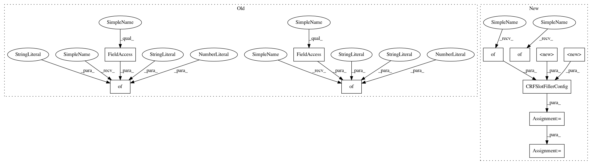

7e7a2b27edd81786fe3f6e4439c1ff5effcc6233,snips_nlu/tests/test_crf_slot_filler.py,TestCRFSlotFiller,test_should_be_serializable,#TestCRFSlotFiller#Any#,194
Before Change
},
{
"factory_name": "get_shape_ngram_fn",
"args": {"n": 2, "language_code": language.iso_code},
"offsets": [-1, 0]
}
]
config = CRFSlotFillerConfig(tagging_scheme=TaggingScheme.BILOU)
dataset = validate_and_format_dataset(SAMPLE_DATASET)
slot_filler = CRFSlotFiller(features_signatures, config)
intent = "dummy_intent_1"
slot_filler.fit(dataset, intent=intent)
// When
actual_slot_filler_dict = slot_filler.to_dict()
// Then
expected_slot_filler_dict = {
"crf_model_data": "mocked_crf_model_data",
"features_signatures": [
{
"args": {
"n": 1,
"language_code": language.iso_code
},
"factory_name": "get_shape_ngram_fn",
"offsets": [
0
]
},
{
"args": {
"n": 2,
"language_code": language.iso_code
},
"factory_name": "get_shape_ngram_fn",
"offsets": [
-1,
After Change
},
{
"factory_name": IsDigitFactory.name,
"args": {},
"offsets": [-1, 0]
}
]
config = CRFSlotFillerConfig(
tagging_scheme=TaggingScheme.BILOU,
feature_factory_configs=features_factories)
dataset = validate_and_format_dataset(SAMPLE_DATASET)
slot_filler = CRFSlotFiller(config)
intent = "dummy_intent_1"
slot_filler.fit(dataset, intent=intent)
// When
actual_slot_filler_dict = slot_filler.to_dict()
// Then
expected_feature_factories = [
{
"factory_name": ShapeNgramFactory.name,
"args": {"n": 1, "language_code": "en"},
"offsets": [0]
},
{
"factory_name": IsDigitFactory.name,
"args": {},
"offsets": [-1, 0]
}
]
expected_config = CRFSlotFillerConfig(
tagging_scheme=TaggingScheme.BILOU,
feature_factory_configs=expected_feature_factories)
expected_slot_filler_dict = {
"crf_model_data": "mocked_crf_model_data",
"language_code": "en",
"config": expected_config.to_dict(),
"intent": intent,
"slot_name_mapping": {
"dummy_intent_1": {
"dummy_slot_name": "dummy_entity_1",
"dummy_slot_name2": "dummy_entity_2",
"dummy_slot_name3": "dummy_entity_2",
},
"dummy_intent_2": {
"dummy slot nàme": "dummy_entity_1"
}
},
}
self.assertDictEqual(actual_slot_filler_dict,
expected_slot_filler_dict)
@patch("snips_nlu.slot_filler.crf_slot_filler.deserialize_crf_model")
In pattern: SUPERPATTERN
Frequency: 3
Non-data size: 11
Instances
Project Name: snipsco/snips-nlu
Commit Name: 7e7a2b27edd81786fe3f6e4439c1ff5effcc6233
Time: 2018-01-18
Author: adrien.ball@snips.net
File Name: snips_nlu/tests/test_crf_slot_filler.py
Class Name: TestCRFSlotFiller
Method Name: test_should_be_serializable
Project Name: snipsco/snips-nlu
Commit Name: 7e7a2b27edd81786fe3f6e4439c1ff5effcc6233
Time: 2018-01-18
Author: adrien.ball@snips.net
File Name: snips_nlu/tests/test_crf_slot_filler.py
Class Name: TestCRFSlotFiller
Method Name: test_should_be_deserializable_before_fit
Project Name: snipsco/snips-nlu
Commit Name: 7e7a2b27edd81786fe3f6e4439c1ff5effcc6233
Time: 2018-01-18
Author: adrien.ball@snips.net
File Name: snips_nlu/tests/test_crf_slot_filler.py
Class Name: TestCRFSlotFiller
Method Name: test_should_be_deserializable